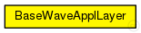
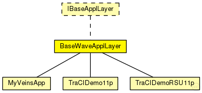

This documentation is released under the Creative Commons license
This documentation is released under the Creative Commons licenseWAVE application layer base class.
Author: David Eckhoff
See also: BaseWaveApplLayer
See also: Nic80211p
See also: Mac1609_4
See also: PhyLayer80211p
The following diagram shows usage relationships between types. Unresolved types are missing from the diagram.
The following diagram shows inheritance relationships for this type. Unresolved types are missing from the diagram.
| Name | Type | Description |
|---|---|---|
| MyVeinsApp | simple module |
network description file for your Veins Application. Add parameters here |
| TraCIDemo11p | simple module | (no description) |
| TraCIDemoRSU11p | simple module | (no description) |
| Name | Type | Default value | Description |
|---|---|---|---|
| debug | bool | false |
whether to print debug output |
| headerLength | int | 88bit |
header length of the application |
| sendBeacons | bool | true |
tell the applayer to periodically send beacons |
| beaconLengthBits | int | 256bit |
the length of a beacon packet |
| beaconUserPriority | int | 7 |
the user priority (UP) of the beacon messages |
| beaconInterval | double | 1s |
the intervall between 2 beacon messages |
| dataLengthBits | int | 1024bit |
the length of a data packet |
| dataOnSch | bool | false |
tells the applayer whether to use a service channel for datapackets or the control channel |
| dataUserPriority | int | 7 |
the default user priority (UP) for data packets |
| avoidBeaconSynchronization | bool | true |
don't start beaconing directly after node was created but delay to avoid artifical synchronization |
| sendWSA | bool | false | |
| wsaLengthBits | int | 250bit | |
| wsaInterval | double | 1s | |
| communicateWhileParked | bool | false |
whether the car should communicate when it is parked in SUMO |
| Name | Direction | Size | Description |
|---|---|---|---|
| lowerLayerIn | input |
from mac layer |
|
| lowerLayerOut | output |
to mac layer |
|
| lowerControlIn | input | ||
| lowerControlOut | output |
// // WAVE application layer base class. // // @author David Eckhoff // // @see BaseWaveApplLayer // @see Nic80211p // @see Mac1609_4 // @see PhyLayer80211p // simple BaseWaveApplLayer like IBaseApplLayer { parameters: bool debug = default(false); //whether to print debug output int headerLength @unit(bit) = default(88bit); //header length of the application bool sendBeacons = default(true); //tell the applayer to periodically send beacons int beaconLengthBits @unit(bit) = default(256bit); //the length of a beacon packet int beaconUserPriority = default(7); //the user priority (UP) of the beacon messages double beaconInterval @unit(s) = default(1s); //the intervall between 2 beacon messages int dataLengthBits @unit(bit) = default(1024bit); //the length of a data packet bool dataOnSch = default(false); //tells the applayer whether to use a service channel for datapackets or the control channel int dataUserPriority = default(7); //the default user priority (UP) for data packets bool avoidBeaconSynchronization = default(true); //don't start beaconing directly after node was created but delay to avoid artifical synchronization bool sendWSA = default(false); int wsaLengthBits @unit(bit) = default(250bit); double wsaInterval @unit(s) = default(1s); bool communicateWhileParked = default(false); //whether the car should communicate when it is parked in SUMO gates: input lowerLayerIn; // from mac layer output lowerLayerOut; // to mac layer input lowerControlIn; output lowerControlOut; }
This documentation is released under the Creative Commons license